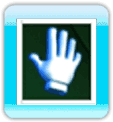

12 |
Interfaz del juego |
 |
Cursor La mano representa tu cursor para los menús. 
 Una mano abierta indica que no te encuentras sobre un icono seleccionable. La mano medio cerrada y con el índice estirado indica que puedes realizar una selección.. Al apuntar durante el juego, el cursor de la mano será reemplazado por una cruz. Esta cruz indica la posición del objetivo en la pantalla, facilitando la tarea de apuntar en modo Apuntar rápidamente. Barra de estado del personaje La barra de estado del personaje muestra la imagen y el nombre del personaje activo.
 En una partida de Bola 9 también muestra la siguiente bola que debe ser embocada. En Bola 8, muestra el color (modo inglés) o el tipo (modo EE. UU.) de la bola del jugador activo. Un símbolo de interrogación será mostrado si todavía no se ha asignado color ni tipo. A la derecha de la barra de estado del jugador, se muestran las bolas embocadas por ese jugador. Barra de estado de efecto  La barra de estado de efecto muestra cualquier modificación hecha sobre el ángulo del taco o el giro de la bola blanca. Se muestra en la parte superior derecha de la pantalla. Caja de ayuda En la parte superior derecha de la pantalla, la caja de ayuda muestra los controles disponibles del jugador. Estos controles cambian dinámicamente según la pantalla en la que se encuentre el jugador. Caja de diálogos  En la parte inferior de la pantalla, la caja de diálogos muestra las instrucciones sobre los desafíos y las ayudas de juego. Texto de información El texto de información muestra detalles relacionados con el juego así como la notificación de faltas o los subtítulos de los diálogos de los personajes. Icono omitir no disponible  Este icono se muestra cuando el jugador intenta omitir una animación que no puede omitirse. |
 |
 |
 |